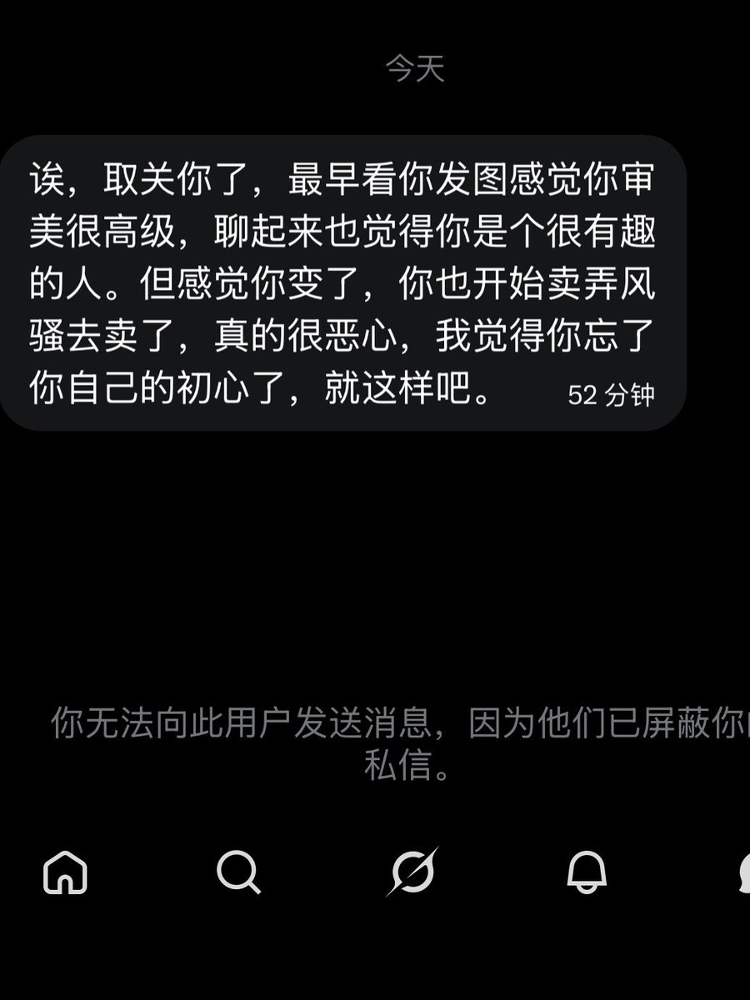

小小麦咪喵喵喵
@XIAOMAIMI_miao
@Chrs_mua 妈咪亲亲你，这是你的账号！想发什么就发什么从来不应该被这种傻逼限制呀。。。！

Chrs
@Chrs_mua
刚吃完饭打开推 看到之前聊的自我感觉还不错的一位朋友给我发来这样一段私信 想要回复发现已经被蔽了心里算是五味杂陈吧
首先我想说的是 我玩这个号 一开始的目的就是纯纯的释放自己的欲望 我分享过奇怪的 xp doi 的瞬间 https://t.co/BJytN82EFD